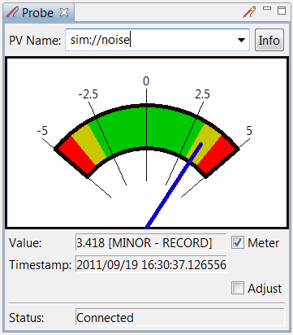

Probe
Overview
Probe is a simple client tool that allows to connect and inspect the value of a pv.
Usage
Enter a name into the "PV" text box and see the output.
Names can be entered in various ways:
- Type a PV name, followed by "Return".
- Select a previously entered PV name from the drop-down list
attached to the PV name text box.
- Send a PV name to the Probe via the context menu of another
CSS application.
Example
A simple scalar value.
